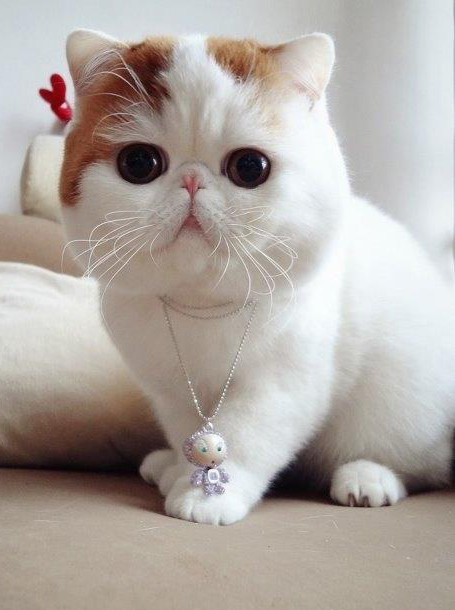
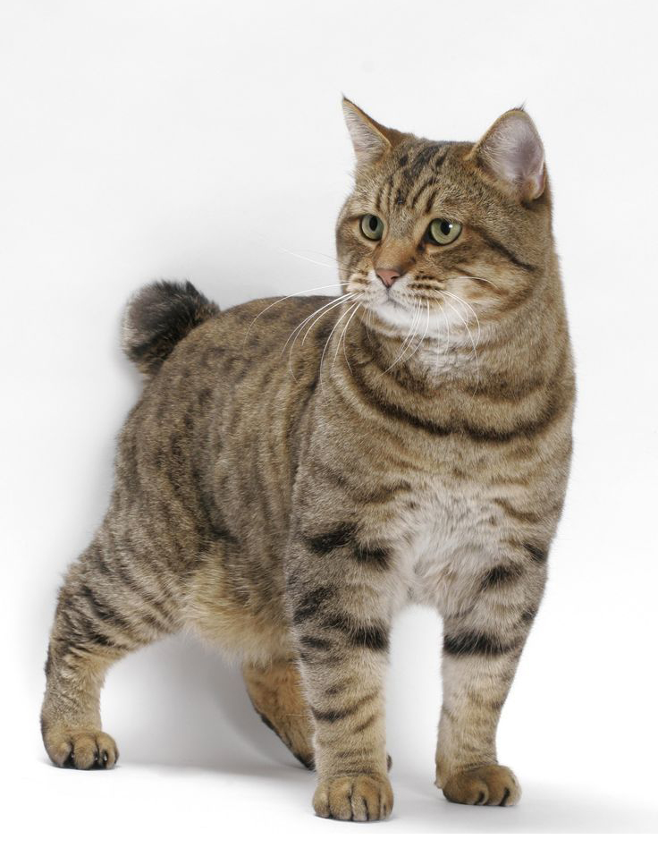
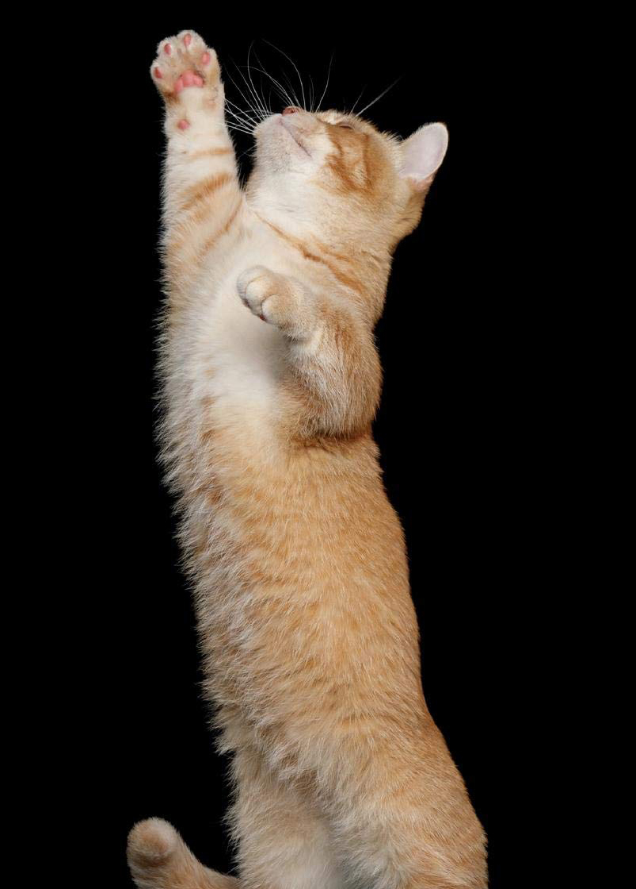
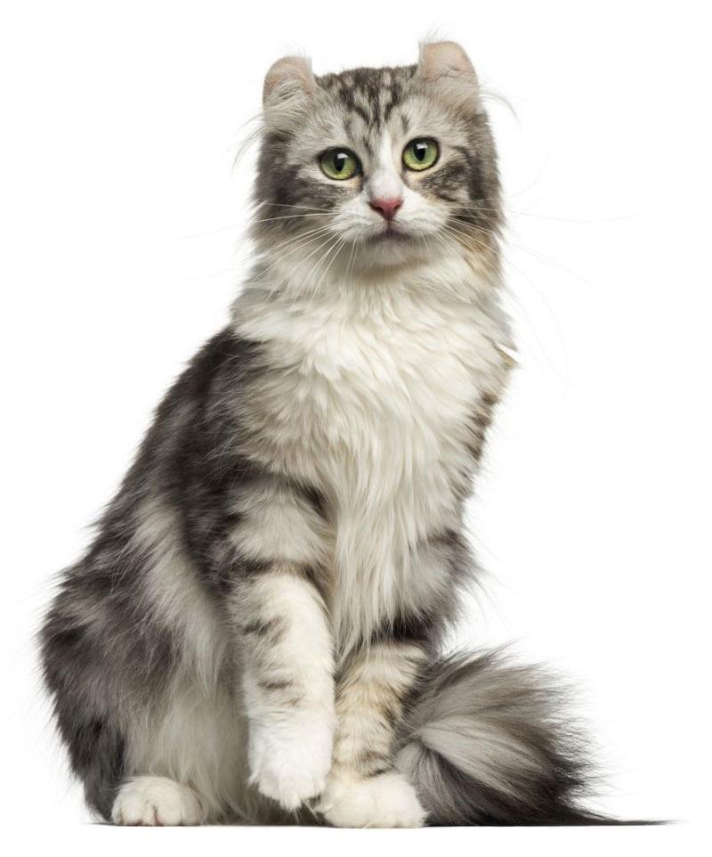
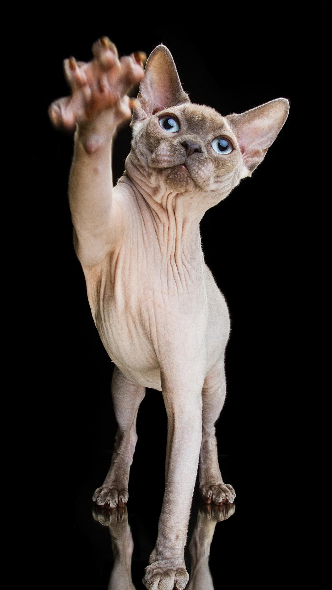

Exótico

Manx

Munchkin

American Curl

Sphynx
Gatos
O gato (Felis silvestris catus), também conhecido como gato caseiro, gato urbano ou gato doméstico, é um mamífero carnívoro da família dos felídeos, muito popular como animal de estimação. Ocupando o topo da cadeia alimentar, é predador natural de diversos animais, como roedores, pássaros, lagartixas e alguns insetos.
Existem cerca de 250 raças de gato doméstico, cujo peso variável entre 2.5 a 12 kg classifica a espécie como animal doméstico de pequeno a médio porte. Assim como ocorre com as raças de cães que apresentam esta mesma faixa de peso, o gato doméstico pode viver entre quinze e vinte anos. Devido à sua personalidade independente, tornou-se um animal de companhia em diversos lares ao redor do mundo, agradando pessoas dos mais variados estilos de vida.